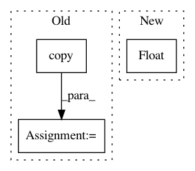

3df2eaf74d8f2299ca05e3e98cab5bf89dafc249,cnn_visualisation.py,,preprocess_image,#Any#,91
Before Change
means = [0.485, 0.456, 0.406]
stds = [0.229, 0.224, 0.225]
preprocessed_img = img.copy()[:, :, ::-1]
for i in range(3):
preprocessed_img[:, :, i] = preprocessed_img[:, :, i] - means[i]
preprocessed_img[:, :, i] = preprocessed_img[:, :, i] / stds[i]
preprocessed_img = \
np.ascontiguousarray(np.transpose(preprocessed_img, (2, 0, 1)))
preprocessed_img = torch.from_numpy(preprocessed_img)
After Change
im_as_arr[channel] -= mean[channel]
im_as_arr[channel] /= std[channel]
// Convert to float tensor
im_as_ten = torch.from_numpy(im_as_arr).float()
// Add one more channel to the beginning. Tensor shape = 1,3,224,224
im_as_ten.unsqueeze_(0)
// Convert to Pytorch variable
im_as_var = Variable(im_as_ten, requires_grad=True)
In pattern: SUPERPATTERN
Frequency: 3
Non-data size: 3
Instances
Project Name: utkuozbulak/pytorch-cnn-visualizations
Commit Name: 3df2eaf74d8f2299ca05e3e98cab5bf89dafc249
Time: 2017-10-24
Author: utku.ozbulak@gmail.com
File Name: cnn_visualisation.py
Class Name:
Method Name: preprocess_image
Project Name: luispedro/mahotas
Commit Name: 22fececf3d3d75a6607b889f972663a1473bc37b
Time: 2010-08-24
Author: lpc@cmu.edu
File Name: mahotas/stretch.py
Class Name:
Method Name: stretch
Project Name: Scitator/catalyst
Commit Name: 4176e012d583f0afddfe2da28963f492585ffa2c
Time: 2020-07-05
Author: dimdoroshenko@gmail.com
File Name: catalyst/contrib/dl/callbacks/periodic_loader_callback.py
Class Name: PeriodicLoaderCallback
Method Name: on_epoch_end